Kreuztabelle und Chi-Quadrat
Crosstab
Zusammenfassung
Die Kreuztabelle ist nützlich zum Analysieren von kategorialen Daten. In diesen Analysen wird eine Kontingenztabelle verwendet, um die Häufigkeitsverteilung der zwei oder mehr Variablen anzuzeigen. Die Analysen, die auf der Tabelle basieren, können bestimmen, ob es eine signifikante Beziehung zwischen Variablen gibt, und die Stärke der Beziehung zwischen den Variablen bewerten.
Origin-Version mind. erforderlich: Origin 2016 SR0
Was Sie lernen werden
Dieses Tutorial zeigt Ihnen:
- das Durchführen der Kreuztabelle
- das Interpretieren der Ergebnisse
Anwenderbericht
Unsere Daten stammen aus der Umfrage Montana Economic Outlook Poll, die im Mai 1992 durchgeführt wurde, mit demografischen Daten für 209 von 418 Befragten. Diese Datendatei enthält sieben Variablen: Alter (unter 35, 35-54, 55 und älter), Geschlecht (männlich, weiblich), finanzieller Status (schlechter, gleich, besser als vor einem Jahr) etc. Mit den Daten soll gezeigt werden:
- Die Häufigkeitenverteilung des finanziellen Status bei drei verschiedenen Altersgruppen und ob sich männlich und weiblich bei der Verteilung unterscheiden.
- Ob es eine signifikante Beziehung zwischen "Finanziellem Status" und "Alter" für die männliche und weibliche Gruppe gibt.
- Die Stärke der Beziehung
Analysedaten vorbereiten
- Öffnen Sie ein neues Projekt oder eine neue Arbeitsmappe. Importieren Sie die Datendatei \Samples\Statistics\MontanacOutlookPoll.dat.
- Sie beginnen mit dem Sortieren der kategorialen Werte.
- Markieren Sie im Arbeitsblatt der Umfrage MontanaOutlookPoll die Spalte B und klicken Sie mit der rechten Maustaste, um die Option Als Kategorisch setzen zu wählen. Klicken Sie in der Beschriftungszeile Kategorien doppelt auf Unsortiert, um den Dialog Kategorien aufzurufen. Aktivieren Sie das Kontrollkästchen Kategorien benutzerdefiniert anpassen (Hinzufügen, Löschen, Beliebige Reihenfolge festlegen). Verwenden Sie dann die Schaltflächen An erste Stelle verschieben
 , Nach oben verschieben
, Nach oben verschieben  , Nach unten verschieben und Nach unten verschieben
, Nach unten verschieben und Nach unten verschieben  , um die Kategorien als "unter 35", "35-54" und "55 und älter" neu zu ordnen:
, um die Kategorien als "unter 35", "35-54" und "55 und älter" neu zu ordnen:
- 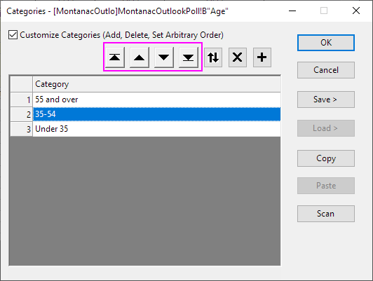
- Wiederholen Sie die gleichen Schritte für Spalte C, so dass die kategoriale Abbildung <Female, Male> ist (<Weiblich, Männlich>).
- Wiederholen Sie die gleichen Schritte für Spalte G, so dass die kategoriale Abbildung <Better, Same, Worse> ist (<Besser, Gleich, Schlechter>).
Kreuztabelle und Chi-Quadrat durchführen
- Öffnen Sie den Dialog der Kreuztabelle und des Chi-Quadrats, indem Sie im Menü Statistik: Deskriptive Statistik: Kreuztabelle und Chi-Quadrat wählen.
- Klicken Sie auf die Registerkarte Eingabe. Die Daten sind im Modus Rohdaten. Markieren Sie daher die Spalten B, G und C für Zeile, Spalte bzw. Layer.
- 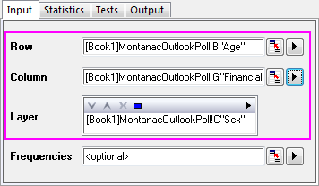
- Klicken Sie auf die Registerkarte Statistik, deaktivieren Sie die Kontrollkästchen Erwartete Anzahl, Residuum, Standardisiertes Residuum und Korrigiertes Residuum. Akzeptieren Sie all die anderen Standardeinstellungen.
- 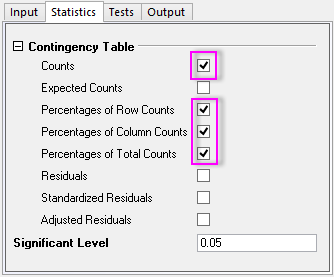
- Klicken Sie auf die Registerkarte Tests und aktivieren Sie das Kontrollkästchen Chi-Quadrat-Test. Erweitern Sie den Zweig Assoziationsmaße und aktivieren Sie dann die Kontrollkästchen Kontingenzkoeffizienten, Phi und Cramérs V (zum Messen der nominalen Assoziation).
- 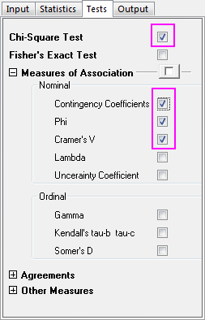
- Klicken Sie auf die Registerkarte Ausgabe und aktivieren Sie das Kontrollkästchen Mosaikdiagramm. Übernehmen Sie die anderen Standardeinstellungen und klicken Sie auf OK.
- 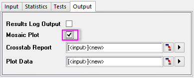
Ergebnisse interpretieren
Wechseln Sie zum Blatt Crosstab1.
Häufigkeitenverteilung
Sie erhalten Informationen zur Häufigkeitenverteilung von dem Mosaikdiagramm und der Kontingenztabelle. Die Fläche von jedem Rechteck im Mosaikdiagramm ist proportional zu dem Prozentanteil der Y-Variablen auf jeder Stufe der X-Variablen, so dass Sie visuell die Häufigkeitenverteilung des "Finanzstatus" und "Alters" für weiblich, männlich und gesamt vergleichen können. Der Kreuztabelle können Sie noch spezifischere Informationen entnehmen. Wenn Sie das Mosaikdiagramm mit der Kreuztabelle kombinieren, erfahren Sie Folgendes:
- Es gibt einen großen Unterschied zwischen den Ansichten von jungen und älteren Frauen.
- Die Mehrheit der Frauen unter 35, 59,5%, haben das Gefühl, dass sie einen besseren finanziellen Status haben. Die Mehrheit der Frauen über 55 und älter, 58,3%, denken, dass ihr finanzieller Status gleichbleibend ist.
- Weniger Frauen unter 35, 11,9%, denken, dass ihr Wohlstandsstatus gleichbleibend ist, während weniger Frauen über 55, 11,1%, denken, dass sie finanziell besser dastehen.
- 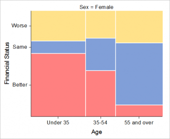 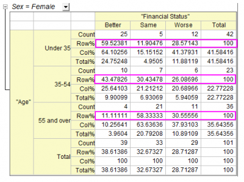
- Im Vergleich zu Frauen zeigt das Empfinden von Männern in Bezug auf ihren finanziellen Status ein anderes interessantes Muster:
- Männer zeigen keinen signifikanten Unterschied beim finanziellen Status zwischen den Altersgruppen.
- Männer im Alter von 35-54 tendieren dazu, etwas mehr Vertrauen in ihren finanziellen Status zu haben.
 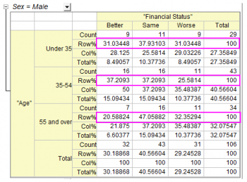
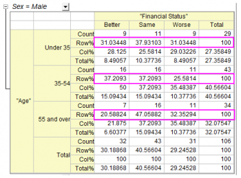
- Unabhängig vom Geschlecht der Befragten gibt es einige Trends nach Altersgruppe:
- Personen unter 55 haben eher Vertrauen in ihren finanziellen Status.
- Personen über 55 haben eher das Gefühl, dass sich der finanzielle Status nicht geändert hat.
- 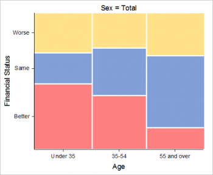 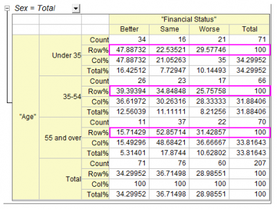
Beziehung zwischen Alter und Finanzstatus ermitteln
Die Tabelle Chi-Quadrat-Tests zeigt die Testergebnisse für die Unabhängigkeit der Zeilen- und Spaltenvariablen. Wenn Wahrsch.>Chi-Qdr. kleiner ist als 0,05, bedeutet dies, dass die Zeilen- und Spaltenvariablen, hier Alter und Finanzstatus, eine signifikante Beziehung haben. Beachten Sie die Schlussfolgerungen in den Fußnoten unter der Tabelle. Sie können schlussfolgern, dass:
-
- Frauen in unterschiedlichem Alter eine unterschiedliche finanzielle Situation haben,
- Dagegen gibt es keinen Nachweis dafür, dass eine Verbindung zwischen dem Alter von Männern und ihrem Finanzstatus besteht.
- Unabhängig vom Geschlecht haben Personen in unterschiedlichem Alter eine unterschiedliche finanzielle Situation.
- 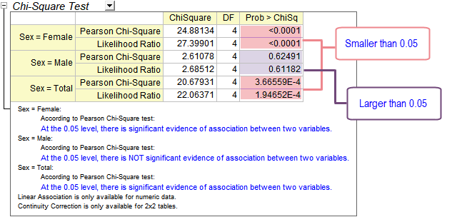
Stärke der Beziehung bewerten
Die Tabelle Assoziationsmaße kann helfen, die Stärke der Beziehung zwischen "Finanzstatus" und "Alter" zu bestimmen. Da dies eine 3*3-Tabelle ist (drei Stufen für Alter und drei Stufen für Finanzstatus), können Sie Kontingenzkoeffizienten wählen, um layerübergreifend zu vergleichen. (Lesen Sie bitte die Einführungsseite, um sich über den Unterschied der drei Statistiken zu informieren). Der Tabelle können Sie entnehmen:
-
- Der Finanzstatus von Frauen zeigt in Bezug auf das Alter eine stärkere Assoziation als im Fall von Männern. (0,444 vs. 0.155)
- 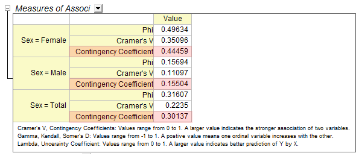